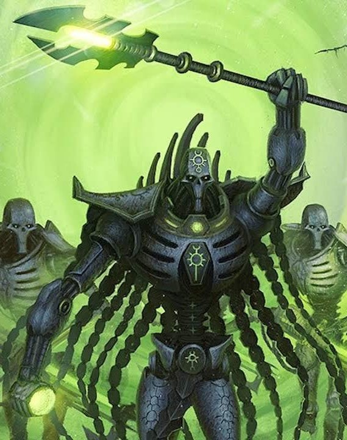
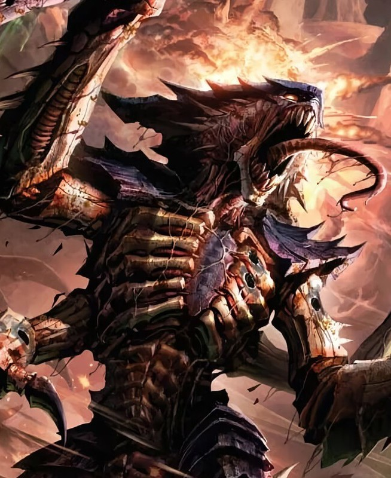

Las Razas Xenos en Warhammer 40k
En el sombrío milenio 41, la humanidad no está sola en la galaxia. Más allá de los dominios del Imperio del Hombre existen innumerables razas alienígenas, conocidas como xenos, que representan amenazas constantes, competidores o aliados temporales. Cada una de estas especies posee motivaciones, culturas y tecnologías que desafían la comprensión humana, y su presencia es un recordatorio de que la guerra nunca termina en Warhammer 40k. Entre todas, algunas destacan por su influencia y peligro: los Orkos, los Eldar, los Dark Eldar, los Necrones, los Tau y los Tyranidos.
Los Orkos
Los Orkos son criaturas brutales, beligerantes y altamente adaptables. Su cultura está basada en la guerra: pelean por diversión, por botín y para demostrar fuerza. Organizados en clanes y tribus, los Orkos viven en sociedades primitivas pero sorprendentemente resilientes, capaces de construir máquinas de guerra improvisadas y adaptarse a cualquier ambiente.
Una de sus características más temibles es la psicoquinesis colectiva, que permite que sus armas y vehículos improvisados funcionen, en parte, gracias a la creencia de los Orkos. Esta habilidad convierte a ejércitos aparentemente caóticos en fuerzas letales y masivas. Aunque su objetivo no es conquistar la galaxia como los Tyranidos, los Orkos representan una amenaza constante para cualquier colonia humana o xenos que se cruce en su camino, provocando guerras interminables y destrucción generalizada.
Los Eldar
Los Eldar son una antigua y altamente avanzada raza psíquica, cuya civilización alcanzó alturas inimaginables antes de su decadencia. Su historia está marcada por la arrogancia: el exceso de placer y la autocomplacencia de su sociedad desencadenó la creación del Dios del Caos Slaanesh, destruyendo la mayoría de su población y condenando a los sobrevivientes a vagar como nómadas espaciales.
Los Eldar sobreviven en Naves Mundo, colosales asteroides artificiales que funcionan como ciudades y naves al mismo tiempo. Son maestros de la guerra, utilizando tecnología superior y habilidades psíquicas devastadoras. Sus objetivos suelen ser proteger lo que queda de su raza y manipular los acontecimientos galácticos para retrasar su inevitable extinción.
Los Dark Eldar
Los Dark Eldar, o Drukhari, son la versión decadente y cruel de los Eldar. Tras la catástrofe que creó a Slaanesh, algunos Eldar buscaron sobrevivir alimentándose del sufrimiento de otros. Viven en la ciudad-teléporta de Commorragh, en la disformidad, donde practican la piratería, esclavizan otras razas y mantienen una sociedad basada en la crueldad y la tortura.
Los Dark Eldar son rápidos, letales y escurridizos. Sus incursiones en el espacio real buscan esclavos y recursos, y sus ejércitos se especializan en ataques relámpago, evitando combates prolongados. Su motivación no es la conquista territorial, sino prolongar su propia supervivencia y protegerse del tormento eterno de Slaanesh.
Los Necrones
Los Necrones son antiguos habitantes de la galaxia que, tras un pacto con fuerzas tecnológicas y sobrenaturales, transfirieron sus conciencias a cuerpos inmortales de metal. Poseen tecnología casi divina y capacidades de regeneración que los hacen virtualmente indestructibles. Durante milenios, permanecieron dormidos bajo la superficie de planetas enteros, despertando en el milenio 41 con el objetivo de recuperar territorios perdidos y exterminar toda vida orgánica.
Su sociedad es jerárquica y organizada bajo monarcas llamados Overlords. Los Necrones no sienten emociones como los humanos ni los Eldar; su motivación es la preservación y expansión de su dominio sobre la galaxia.
Los Tau
Los Tau son una raza joven, tecnológica y con una visión expansionista basada en la filosofía del Bien Supremo. Creen en la unidad y la cooperación, buscando convencer o someter a otras razas mediante diplomacia o guerra. Su sociedad es altamente organizada, con castas especializadas para la guerra, la administración y la investigación.
A diferencia de los Tyranidos o los Orkos, los Tau buscan expandirse mediante conquista estratégica y asimilación cultural, no por destrucción indiscriminada. Su tecnología avanzada, especialmente en armamento a distancia y drones, les permite imponerse en conflictos sin depender del combate cuerpo a cuerpo.
Los Tyranidos
Los Tyranidos son una raza de depredadores galácticos que viajan de un sistema estelar a otro en vastas flotas colmena. Son organismos colectivos sin voluntad individual que buscan consumir toda biomasa para alimentar a la nave madre y perpetuar la especie. No poseen cultura ni moral; su única motivación es la supervivencia y la expansión a través de la ingestión de mundos enteros.
Cada Tyranido es un componente del enjambre: guerreros, bestias, criaturas especializadas y bioarmas, todas controladas por la mente colmena, un sistema de coordinación psíquica que conecta a todos los individuos. Su llegada a un planeta significa la completa aniquilación de toda forma de vida. Para el Imperio del Hombre, los Tyranidos representan una amenaza absoluta.
Conclusión
Las razas xenos del universo de Warhammer 40k representan amenazas diversas y complejas para la humanidad. Cada especie tiene motivaciones, tácticas y objetivos propios: los Orkos siembran caos y guerra, los Eldar y Dark Eldar manipulan y atacan estratégicamente, los Necrones buscan exterminar toda vida, los Tau expanden su imperio bajo un ideal colectivo y los Tyranidos devoran mundos enteros.
El Imperio del Hombre debe enfrentarlas constantemente, ya que la galaxia es un lugar peligroso, donde cada interacción con los xenos puede significar supervivencia o destrucción. La presencia de estas razas refleja la complejidad y brutalidad del milenio 41, donde la guerra es eterna y la humanidad lucha por sobrevivir rodeada de enemigos incansables y mortales.

Orkos
.
.
.
Necrones
.
.
.
Tiranidos